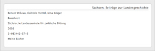
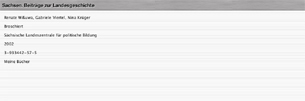
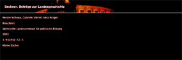

Anzeigestil
Die Anzeige innerhalb der Zusammenfassung kann abgeändert werden, dafür sind Erweiterungen für den Anzeigestil verantwortlich. Folgende Anzeigestile werden derzeit mit Books ausgeliefert:
Classic Display (erstellt von Chris Karr)
Eine einfache, rein auf Text basierte, Anzeige. Es werden Titel, Autor(en), Genre, eine inhaltliche Zusammenfassung, der Herausgeber und das Datum der Veröffentlichung angegeben.
Default Display (erstellt von Chris Karr)
Ein einfacher Anzeigestil, bei dem der Titel mit blau hinterlegt ist. Es werden Titel, Autor(en), Illustratoren, Genre, Format, der Herausgeber, das Datum der Veröffentlichung, eine inhaltliche Zusammenfassung und der Name der Bücherliste angegeben.
Books Online (erstellt von Enrico Richter)

Dieser Anzeigestil erinnert an den Stil der Books-Internetseite. Es werden Titel, Autor(en), Illustratoren, Format, der Herausgeber, das Datum der Veröffentlichung, ISBN, eine inhaltliche Zusammenfassung und der Name der Bücherliste angegeben.
Brushed Metal (erstellt von Enrico Richter)

Ein Anzeigestil für Apple-Nostalgiker: eine Hommage an Brushed Metal und Aqua. Es werden Titel, Autor(en), Illustratoren, Format, der Herausgeber, das Datum der Veröffentlichung, ISBN, eine inhaltliche Zusammenfassung und der Name der Bücherliste angegeben.
Semper Opera (erstellt von Enrico Richter)

Die berühmte Dresdner Semperoper erscheint nun auch in Books. Bei diesem Anzeigestil wird der Titel des Buches mit einem Bild der obersten Etage der Semperoper unterlegt. Es werden Titel, Autor(en), Illustratoren, Format, der Herausgeber, das Datum der Veröffentlichung, ISBN, eine inhaltliche Zusammenfassung und der Name der Bücherliste angegeben.